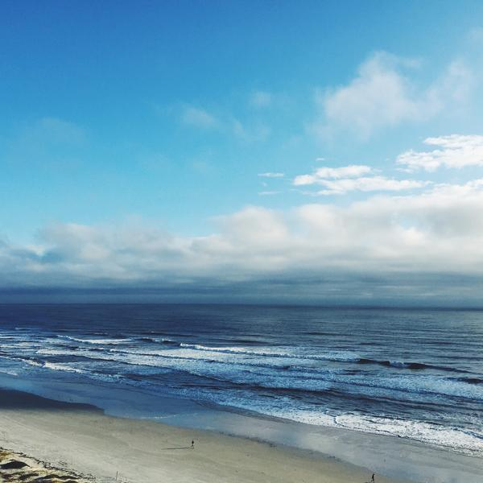

<h1>görsellerle calismak</h1>
<!-- img -->



<!-- 
title, resme imlec getirince yazı çıkmasını sağlar
width, height
border kenarlık verir
align, right left resmi yaslar

map ve area
Resimlerinize hyperlink atamanız durumunda resmin tüm alanı link alanı haline dönüşecektir. Resmin herhangi bir yerine tıklanılması durumunda resim sizi tanımlanan bağlantıya gönderecektir.  etiketleri için kullanılan <map> ve <area> etiketleri ile resmin içindeki koordinatlarla belirlediğimiz bir alanı sadece link haline getirebiliriz. Eklediğimiz <area> etiketi kadar belirlenen alanı bir resim üzerinden birçok bağlantıya link verebiliriz.

Örneğin Instagram'da bazı satıcılarda gördüğünüz bir insan fotoğraf üzerinde pantolon ve ayakkabının ürün linklerini ayrı ayrı vermek isterseniz kullanabilirsiniz.

<html>
<body>


<map name="workmap">
 <area shape="rect" coords="34,44,270,350" alt="Computer" href="computer.htm">
 <area shape="rect" coords="290,172,333,250" alt="Phone" href="phone.htm">
 <area shape="circle" coords="337,300,44" alt="Cup of coffee" href="coffee.htm">
</map>
</body>
</html>


 -->
